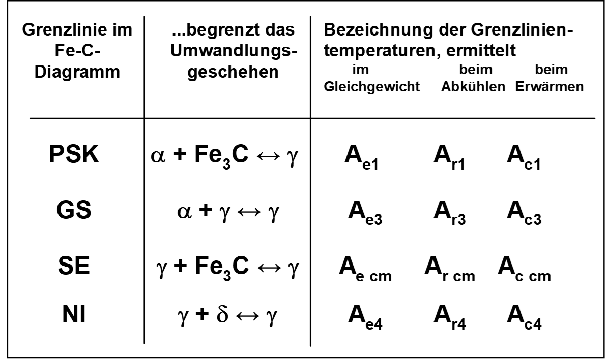
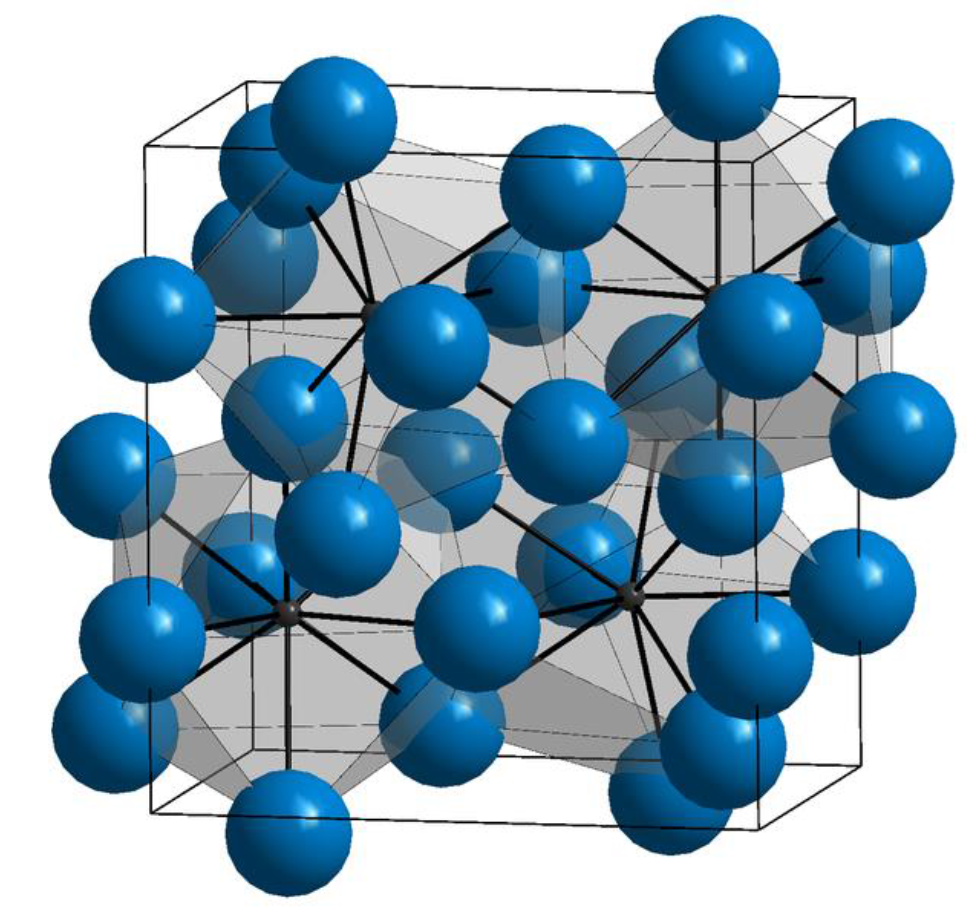

Eisen
Wichtigster Werkstoff im Maschinenbau. Gründe sind
- geringe Kosten
- hohe Festigkeit und elastische Steifigkeit
- Vielzahl von möglichen Legierungen
- Verfügbarkeit
- je nach Legierung Gießbarkeit, Schweißbarkeit, etc.
| Kohlenstoffgehalt (Masse-%) | Bezeichnung | Typ |
|---|---|---|
| 0.02 < C < 0.8 | (Kohlenstoff-) Stahl | untereutektoide Stähle |
| C = 0.8 | (Kohlenstoff-) Stahl | eutektoide Stähle |
| 0.8 < C < 2.06 | (Kohlenstoff-) Stahl | übereutektoide Stähle |
| 2.06 < C < 4.3 | Gusseisen | untereutektische Gusseisen |
| C = 4.3 | Gusseisen | eutektische Gusseisen |
| 4.3 < C < 6.67 | Gusseisen | übereutektische Gusseisen |
Eisen Kohlenstoff Diagramm (EKD)
- wichtigstes ZSD
- Eisenist der wichtigste Werkstoff im Maschinenbau.
Gründe sind
- geringe Kosten
- hohe Festigkeit und elastische Steifigkeit
- Vielzahl von möglichen Legierungen
- Verfügbarkeit
- Gießbarkeit, Schweißbarkeit, etc.
Erklärvideo für das Eisen Kohlenstoff Diagramm


Wichtige Gleichgewichtslinien
ABCD Liquiduslinie AHIECF Soliduslinie ECF Eutektikale PSK Eutektoide ES, PQ Sättigungslinien MOSK Curie-Linie QPSECD Bildung/Auflösung Fe3C
Punkte im Zustandsdiagramm
S - eutektoider Punkt C - eutektischer Punkt G - $\alpha$ / $\gamma$ - Umwandlungspunkt des reinen Eisens E - Punkt max. C-Löslichkeit im $\alpha$ - MK P - Punkt max. C-Löslichkeit im $\gamma$ - MK u. a. m. (vgl. Fe-Fe3C - Diagramm)
Folgende Grenzlinientemperaturen (Umwandlungstemperaturen) werden benutzt:
A: arreter (anhalten) r: refroidir (abkühlen) c: chauffer (erwärmen) e: équilibre (Gleichgewicht)
Ac1: 723°C Ac3: abhängig vom C-Gehalt

Phasen- und Gefüge im System-Eisen-Kohlenstoff
Mischkristalle
$\alpha$-Mischkristall (krz)
- Gefügebezeichnung Ferrit ($\alpha$-Ferrit)
- rein ferritisches Gefüge besitzt geringe Härte/Festigkeit, aber hohe Duktilität (Zähigkeit)
- Max. C-Löslichkeit: nur 0,02 %

$\delta$-Mischkristall (krz)
\[\delta\]
-Ferrit ist nur oberhalb von 1392°C stabil- technisch von untergeordneter Bedeutung
- Max. C-Löslichkeit: 0.12 %
$\gamma$-Mischkristall (kfz)
- Gefügebezeichnung Austenit
- scheidet sich oberhalb der G-S-E-Linie aus;
- durch Legierungszusätze (Ni, Mn) und Abschrecken auch bei Raumtemperatur beständig (austenitische Stähle)
- unmagnetisch, zäh und durch Kaltverfestigung härtbar (Mangan-, Nickel-, Chrom-Nickel-Stähle)
- hohe Warmfestigkeit, gute Korrosions- und Zunderbeständigkeit
- Max. C-Löslichkeit: 2.06 %
Intermediäre Phase
Zementit (Eisencarbid Fe3C); 6.67 Masse-% C-Gehalt
- Primärzementit:
primäre Kristallisation aus der Schmelze (Linie CD)
- Sekundärzementit:
Ausscheidung aus dem Austenit (Linie ES)
- Tertiärzementit:
Ausscheidung aus dem Ferrit (Linie PQ)
Kristallstruktur

orthorhombischen Elementarzelle
- zwölf Eisen- und vier Kohlenstoffatome
- die Kohlenstoffatome sind relativ unregelmäßig (zweifach überkappt trigonal-prismatisch) von acht Eisenatomen umgeben
Zementit ist hart und spröde
überwiegende Zahl der technischen Eisen-Kohlenstoff-Legierungen erstarrt unter Bildung von Zementit

Weiterhin wird unterschieden zwischen dem schwarzen Gusseisen (Grauguss), in dem der überschüssige Kohlenstoff in Form von Graphit, und dem weißen Gusseisen, in dem der Kohlenstoff in Form von Zementit vorkommt.
Stahl
- Mit zunehmendem C-Gehalt steigen die Festigkeit und Härtbarkeit des Stahles, wogegen seine Dehnung, Schmiedbarkeit, Schweißbarkeit und Bearbeitbarkeit (durch spanabhebende Werkzeuge) verringert werden
- Der Korrosionswiderstand gegenüber Wasser, Säuren und heißen Gasen wird durch den Kohlenstoff praktisch nicht beeinflusst.
- Für Kohlenstoffgehalte unter 0.25 Masse-% sind Stähle gut schweißbar
Gusseisen
- Massenanteil über 2.06 % Kohlenstoff
- gute Gießbarkeit auf (geringer Schmelzpunkt, dünnflüssige Schmelze, …)
- hart und spröde ist
- Die Zerspanbarkeit von Gusseisen hängt von der genauen Sorte ab;
- bei Gusseisen mit Lamellengraphit – der häufigsten Sorte – ist sie gut
- Festigkeit ist geringer als die von Stahlguss, die Dämpfung ist höher
- Viele Sorten enthalten zusätzlich noch Silicium, das die Gießbarkeit verbessert, sowie weitere Legierungsanteile wie Mangan, Chrom oder Nickel

Es wird unterschieden zwischen:
- grauem Gusseisen (Grauguss), in dem der Kohlenstoff in Form von Graphit vorkommt. Die Bruchflächen erscheinen grau
- weißem Gusseisen, in dem der Kohlenstoff als Carbid in Form von Zementit (Fe3C) vorkommt. Die Bruchflächen sind weiß
Vergleich Gusseisen und Stahl
- Dichte $7.2\frac{g}{cm^3}$ vs. $7.85\frac{g}{cm^3}$
- Schmelztemperatur $1150 °C$
- korrosionsbeständiger als Stahl
- spröder als Stahl

Einteilung und Eigenschaften
Gusseisen mit Lamellengraphit
- einfachste und häufigste Gusseisen-Sorte ist Gusseisen mit Lamellengraphit

- Graphit liegt in Form von dünnen, unregelmäßig geformten Lamellen vor
Gusseisen mit Lamellengraphit
- Lamellen wirken bei Zugbelastung als Kerben, daher ist die Zugfestigkeit infolge der Kerbwirkung relativ gering
- Druckfestigkeit liegt etwa um den Faktor 4 höher als die Zugfestigkeit

- spröder Werkstoff
- gute Wärmeleitfähigkeit
- vorteilhafte Selbstschmiereigenschaften
- wenn durch Bearbeitung die Lamellen angeschnitten und der Graphit selbst oder an dessen Stelle andere Schmiermittel in den Hohlräumen „bevorratet“ werden können.
Gusseisen mit Kugelgraphit
- Bessere mechanische Eigenschaften als Gusseisen mit Lamellengraphit
- zeigt duktiles Verhalten

Gusseisen mit Vermiculargraphit

- Eigenschaften zwischen Gusseisen mit Lamellengraphit und denen des Gusseisens mit Kugelgraphit
- Herstellung ist jedoch schwieriger und erfordert eine in engen Toleranzen geführte Schmelzbehandlung
- höhere Festigkeit und Bruchdehnung und Bruchzähigkeit
- geringere Wanddickenabhängigkeit der Eigenschaften
Gusseisen mit Vermiculargrafit zeichnet sich gegenüber Gusseisen mit Lamellengrafit durch folgende Eigenschaften aus:
- höhere Festigkeit und Bruchdehnung
- höhere Bruchzähigkeit
- geringere Wanddickenabhängigkeit der Eigenschaften
Gegenüber Gusseisen mit Kugelgrafit bietet Gusseisen mit Vermiculargrafit folgende Vorteile:
- niedrigerer thermischer Ausdehnungskoeffizient
- höhere Wärmeleitfähigkeit
- niedrigerer E-Modul
- geringeres thermisch induziertes Eigenspannungsniveau
- bessere Temperaturwechselbeständigkeit und geringere Verzugsneigung aufgrund der zuvor genannten Eigenschaften
- besseres Dämpfungsvermögen
- bessere gießtechnische Eigenschaften (geringere Lunkerneigung, besseres Formfüllungs- und Fließvermögen)